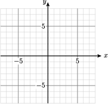

Chapter 8 Polynomial and Rational Functions
The graphs of linear functions, quadratic functions, power functions, and exponential all have a characteristic shape. On the other hand, the family of polynomial funcions has graphs that represent a huge variety of different shapes.
Ever since Gutenberg's invention of movable type in 1455, artists and printers have been interested in the design of pleasing and practical fonts. In 1525, Albrecht Durer published On the Just Shaping of Letters, which set forth a system of rules for the geometric construction of Roman capitals. The letters shown above are examples of Durer's font. Until the twentieth century, a ruler and compass were the only practical design tools, so straight lines and circular arcs were the only geometric objects that could be accurately reproduced.
With the advent of computers, complex curves and surfaces, such as the smooth contours of modern cars, can be defined precisely. In the 1960s the French automobile engineer Pierre Bézier developed a new design tool based on polynomials. Bézier curves are widely used today in all fields of design, from technical plans and blueprints to the most creative artistic projects.
The study of Bézier curves falls under the general topic of curve fitting, but these curves do not really have a scientific purpose. A scientist does not use Bézier curves to fit a function to data. Rather, Bézier curves have more of an artistic purpose. Computer programs like Illustrator, Freehand, and CorelDraw use cubic Bézier curves. The PostScript printer language and Type 1 fonts also use cubic Bézier curves, and TrueType fonts use quadratic Bézier curves.
Investigation 8.1. Bézier Curves.
A Bézier curve is actually a sequence of short curves pieced together. Each piece has two endpoints and (for nonlinear curves) at least one control point. The control points do not lie on the curve itself, but they determine its shape. Two polynomials define the curve, one for the \(x\)-coordinate and one for the \(y\)-coordinate.
The linear Bézier curve for two endpoints, \((x_1, y_1)\) and \((x_2, y_2)\text{,}\) is the straight line segment joining those two points. The curve is defined by the two functions
for \(0\le t\le 1\text{.}\)
Find the functions \(f\) and \(g\) defining the linear Bézier curve joining the two points \((-4,7)\) and \((20)\text{.}\) Simplify the formulas defining each function.
Fill in the table of values and plot the curve.
\(t\) \(0\) \(0.25\) \(0.5\) \(0.75\) \(1\) \(x\) \(\hphantom{000}\) \(\hphantom{000}\) \(\hphantom{000}\) \(\hphantom{000}\) \(\hphantom{000}\) \(y\) \(\) \(\) \(\) \(\) \(\) 
The quadratic Bézier curve is defined by two endpoints, \((x_1, y_1)\) and \((x_3, y_3)\text{,}\) and a control point, \((x_2, y_2)\text{.}\)
for \(0\le t\le 1\text{.}\)
Find the functions \(f\) and \(g\) for the quadratic Bézier curve defined by the endpoints \((-4, 7)\) and \((2, 0)\text{,}\) and the control point \((0, 5)\text{.}\) Simplify the formulas defining each function.
Fill in the table of values and plot the curve.
\(t\) \(0\) \(0.25\) \(0.5\) \(0.75\) \(1\) \(x\) \(\hphantom{000}\) \(\hphantom{000}\) \(\hphantom{000}\) \(\hphantom{000}\) \(\hphantom{000}\) \(y\) \(\) \(\) \(\) \(\) \(\) Draw a line segment from \((-4,7)\) to \((4,7)\) on the grid above to complete the numeral 7.
We can adjust the curvature of the diagonal stroke of the 7 by moving the control point. Find the functions \(f\) and \(g\) for the quadratic Bézier curve defined by the endpoints \((4,7)\) and \((0,-7)\text{,}\) and the control point \((0,-3)\text{.}\) Simplify the formulas defining each function.
Fill in the table of values and plot the curve.
\(t\) \(0\) \(0.25\) \(0.5\) \(0.75\) \(1\) \(x\) \(\hphantom{000}\) \(\hphantom{000}\) \(\hphantom{000}\) \(\hphantom{000}\) \(\hphantom{000}\) \(y\) \(\) \(\) \(\) \(\) \(\) Draw a line segment from \((-4, 7)\) to \((4, 7)\) on the grid above to complete the numeral 7.
On your graphs in steps (5) and (8), plot the three points that defined the curved section of the numeral 7, then connect them in order with line segments. How does the position of the control point change the curve?
A cubic Bézier curve is defined by two endpoints, \((x_1,y_1)\) and \((x_4,y_4)\text{,}\) and two control points, \((x_2,y_2)\) and \((x_3,y_3)\text{.}\)
for \(0\le t \le 1\text{.}\)
Find the functions \(f\) and \(g\) for the cubic Bézier curve defined by the endpoints \((4,7)\) and \((-4,-5)\text{,}\) and the control points \((3,3)\) and \((0,-8)\text{.}\) Simplify the formulas defining each function.
Fill in the table of values and plot the curve.
\(t\) \(0\) \(0.25\) \(0.5\) \(0.75\) \(1\) \(x\) \(\hphantom{000}\) \(\hphantom{000}\) \(\hphantom{000}\) \(\hphantom{000}\) \(\hphantom{000}\) \(y\) \(\) \(\) \(\) \(\) \(\) Connect the four given points in order using three line segments. How does the position of the control points affect the curve? Finish the letter y by including the linear Bézier curve you drew for step (2).